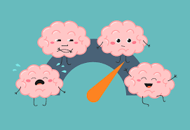

<! DOCTYPE html>
<html>
     <head> 
     	 <meta charset="utf-8" />
        <title> Santé mentale  </title>
                <link rel="stylesheet" href="fichier1.css" type="text/css">

     </head>
     <body width=100% >
         <header> 
         	<p>Vaincre le cancer</p>
         </header>
         <nav>
          <ul id="menu">
           <li><a href="Qu'est_ce_que_le_cancer.html">Qu'est ce que le cancer</a></li>
           <li> <a href="les_types_de_cancer.html">les types de cancer</a></li>
           <li> <a href="pour_diagnostiquer.html">à qui s'adresser
            <ul>
              <li><a href="pour_diagnostiquer.html"> pour diagnostiquer</a></li>
              <li><a href="pour_traiter.html"> pour traiter</a></li> 
            </ul> 
           </a> </li>
           <li> <a href="les_types_de_traitement.html">traitement
            <ul>
              <li><a href="les_types_de_traitement.html">les types de traitement </a></li>
              <li><a href="tests_et_procedures.html"> tests et procedures</a></li>
              <li><a href="les_effets_secondaires.html"> les effets secondaires</a></li>
              <li><a href="therapies_complementaires.html"> therapies complementaires</a></li> 
            </ul> 
           </a></li>
           <li> <a href="nutrition.html">vivre avec
             <ul>
              <li><a href="nutrition.html">nutrition </a></li>
              <li><a href="santé_mentale.html"> santé mentale</a></li>
              <li><a href="comment_aider.html"> comment aider</a></li>
              <li><a href="enfant_et_cancer.html"> enfant et cancer</a></li> 
            </ul> 
           </a> </li>
           <li> <a href="partager_son_histoire.html">histoire 
            <ul>
              <li><a href="partager_son_histoire.html"> partager son histoire</a></li>
              <li><a href="histoires_des_autres.html"> histoires des autres</a></li> 
            </ul> 
           </a></li>
          </ul> 
         </nav> 
         <section>
          
           <article> 
            <h1 id="d1"> la santé mentale</h1>
            <p align="center"></p>
<h2>Qu'est-ce que la santé mentale ? </h2>
<p>Une bonne santé mentale et un soutien actif de l'entourage sont essentiels au combat contre le cancer. La santé mentale fait référence au 
bien-être psychologique, émotionnel et social. Elle comprend notre ressenti, nos pensées, nos actions et notre relation aux autres. 
Une bonne santé mentale peut améliorer les résultats médicaux et la qualité de vie du patient et de sa famille.
</p>
<p>Un diagnostic de cancer est un événement traumatique pour les patients et leur famille. C’est un choc. Vous pourriez ressentir des
émotions désagréables, tels que de l’anxiété, de la colère, de la frustration ou du découragement… Cette situation peut 
vous amener à vous poser des questions :
</p>
<p><ul><li>Les émotions que je ressens sont-elles normales ?</li>
 <li>Comment savoir si je suis en détresse psychologique, en dépression ? </li>
 <li>Comment parler de la maladie à mes proches ? À qui en parler ?</li>
 <li>Quelle attitude adopter avec des enfants ?</li>
  </ul>
</p>
<p>Ces émotions sont normales, mais elles peuvent parfois perturber votre niveau de fonctionnement et votre qualité de vie. Nous parlons 
alors d’une détresse psychologique.
</p>
<h2>Cancer et dépression</h2>
<p>Recevoir un diagnostic de cancer est un des événements les plus menaçant et stressant que l’on puisse vivre et affecte de multiples aspects 
de la vie d’une personne (vie familiale, travail, activités sociales, changements de l’image de soi…).
</p>
<p>À l’annonce d’une mauvaise nouvelle, il est normal de ressentir de l’anxiété, de la frustration, de la colère, de l’incertitude, du 
découragement. Les changements d’humeur et la tristesse font partie de l’expérience normale de la maladie, mais la dépression détériore 
la qualité de vie et perturbe l’adaptation à la maladie.
</p>
<p>50 % des personnes atteintes de cancer décrivent des difficultés émotionnelles sous différentes formes : adaptation difficile, insomnie, 
anxiété, humeur triste.
</p>
<p>Les personnes qui vivent déjà ou ont vécu des difficultés émotionnelles importantes avant un diagnostic de cancer, qui ont vécu des pertes 
récentes ou dont un proche est décédé du cancer doivent être plus vigilantes sur les signes de dépression car elles sont plus à risque. 
Les principaux symptômes physiques pouvant survenir durant un traitement de chimiothérapie ou de radiothérapie sont : fatigue, perte 
d’énergie, perte de poids, douleur, tristesse, sueurs nocturnes, insomnies, perte de cheveux…
</p>
<h2>Comment savoir si ces symptômes sont reliés à la maladie et/ou aux traitements ou s’ils sont le reflet d’une 
dépression ? </h2>
<p>Il est important de retenir que si ces émotions persistent pendant quelques semaines, augmentent et/ou commencent à nuire aux activités 
quotidiennes, il pourrait s'agir alors d'une dépression qui nécessiterait probablement une consultation avec un intervenant qualifié.

</p>
<h2>Comment en parler à ses proches </h2>
<p>Il n’est pas facile d’annoncer son cancer. Ce moment peut être vécu comme une épreuve supplémentaire :
</p>
<p><ul><li>La peur de ne pas trouver les mots ;</li>
 <li>La peur de craquer ;</li>
 <li> La peur de faire du mal à ceux que l’on aime…</li>
  </ul>
</p>
<p>Pourtant, il peut être avantageux à bien des égards de parler du cancer quand on se sent prêt à le faire et quand on sait à qui on souhaite 
l’annoncer. 
</p>
<p>Plusieurs témoignages de personnes ayant annoncé leur diagnostic à leurs proches ont dit avoir ressenti une libération du fardeau de la 
maladie. La peine partagée est moins difficile à supporter car la personne atteinte du cancer peut parler plus aisément de sa maladie avec 
les personnes qu’elle aura choisies. Ce partage permet aux proches d’accompagner la personne atteinte du cancer.
</p>
<h2>À qui dois-je le dire ?  </h2>
<p>
Vous pouvez le dire à toutes les personnes significatives pour vous et à tous ceux qui seront touchés directement ou indirectement par les 
conséquences de la maladie. Il faut vous attendre à différentes réactions de la part de vos proches. Certains seront très touchés alors que 
d’autres vous sembleront distants. Selon leurs capacités, certaines personnes seront en mesure de vous accompagner dans ce 
cheminement particulier de votre vie. D’autres ne pourront pas supporter la maladie et se sentiront incapable de vous accompagner. Ceuxci préfèreront même ne plus donner de nouvelles ou vous éviteront. Enfin, il est aussi possible que certaines personnes ne répondent pas à 
vos besoins et que vous sentiez le besoin de les tenir à l’écart. Respectez-vous et exprimez clairement vos besoins. Ne rien dire est souvent 
bien pire que la plus mauvaise des communications
</p>
           </article> 
         </section>


         <footer> 
            <p> Contact :<br>Tel :06 01 02 03 04<br>Fax : 05 06 07 08 09<br>Adresse : Bd. Prince My Abdellah, B.P. 2390, 40000 Marrakech
            </p>
         </footer>
     </body>

</html>